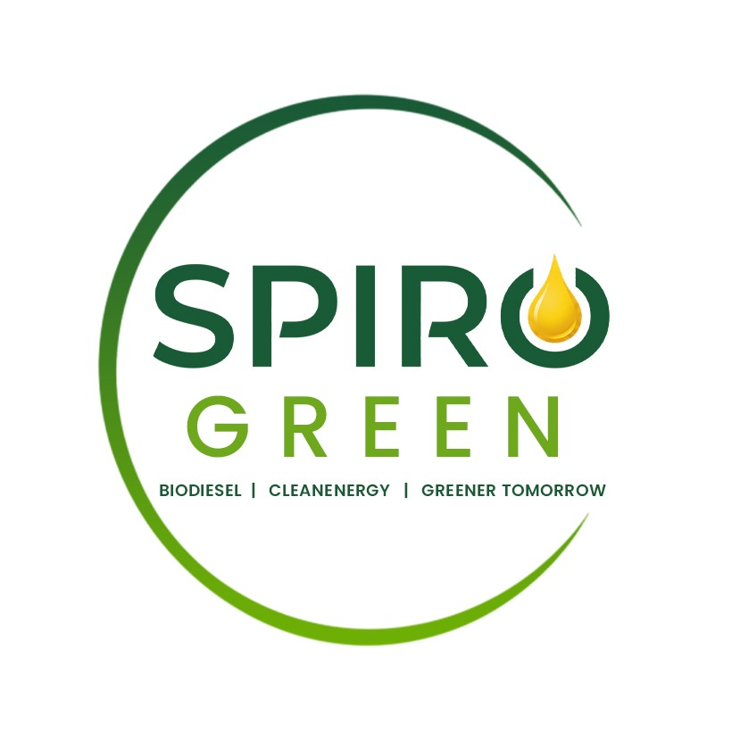

Feedstock procurement
Build reliable purchase channels for suitable oils, fats, and circular-economy inputs, with clear documentation and quality expectations.

Spiro Green Biodiesel ManufacturingUpcoming biodiesel manufacturer near Indore
Spiro Green is being formed to manufacture biodiesel from responsible feedstocks and supply it to Oil Marketing Companies, while preparing for future opportunities in CBG, waste-to-energy, and low-carbon energy products.
Who we are
Spiro Green is an upcoming biodiesel and circular biofuel company in Madhya Pradesh. The company is being planned with a practical goal: convert suitable circular-economy feedstocks into biodiesel through a disciplined manufacturing process and supply the finished fuel to OMC-linked channels.
The site location, installed capacity, and operating approvals are currently being finalized. This page is a working company profile for early supplier, vendor, and partner conversations.
Manufacturing approach
Build reliable purchase channels for suitable oils, fats, and circular-economy inputs, with clear documentation and quality expectations.
Plan manufacturing around controlled handling, batch discipline, testing checkpoints, and consistent biodiesel output.
Prepare for compliant storage, dispatch coordination, and documentation required for OMC and industrial fuel supply chains.
Supplier & buyer desk
Connect with us if you supply eligible biodiesel feedstock, oils, waste oils, fats, logistics services, plant machinery, tanks, chemicals, testing equipment, or industrial utilities.
Reach out for biodiesel supply discussions, offtake coordination, transport partnerships, vendor registration, and upcoming plant-related opportunities.
Leadership
Director
Focused on company formation, business development, supplier conversations, OMC coordination, and long-term growth planning for Spiro Green.
LinkedInDirector
Guiding the company with experience, operational judgment, vendor relationships, and financial discipline as the project moves from planning to execution.
LinkedInFuture plans
Our immediate priority is to finalize the plant location near Indore, complete company and compliance milestones, and establish transparent supplier relationships before commercial operations begin. Over time, Spiro Green aims to evaluate additional biofuel and waste-to-energy projects that support cleaner industry and better resource recovery.
Next energy opportunities
Compressed Bio Gas projects using organic waste streams, agricultural residues, and other suitable inputs where the economics, location, and compliance path are practical.
Energy recovery opportunities that reduce unmanaged waste, support cleaner disposal systems, and create value from material that would otherwise be underutilized.
Long-term interest in newer biofuel pathways, better process control, improved conversion efficiency, and technologies that reduce emissions across the fuel lifecycle.
As projects mature, Spiro Green intends to evaluate credible carbon credit and emission-reduction opportunities through proper measurement, documentation, and verification.
Sustainability alignment
Our work is planned around cleaner fuel, responsible production, supplier transparency, and environmental protection. These goals guide the kind of company Spiro Green wants to become.
Biofuel and future CBG projects can support cleaner energy alternatives for industrial and transport-linked demand.
Planned investments in process control, testing systems, and efficient plant infrastructure can improve manufacturing reliability.
Circular feedstock use can help convert waste and by-products into productive energy value.
Lower-carbon fuels, efficiency improvements, and future carbon credit pathways can contribute to measurable emission reduction.
Contact
Use this form for supplier proposals, biodiesel purchase discussions, partnership introductions, or vendor registration. For now, inquiries can be prepared as a WhatsApp message to the director.